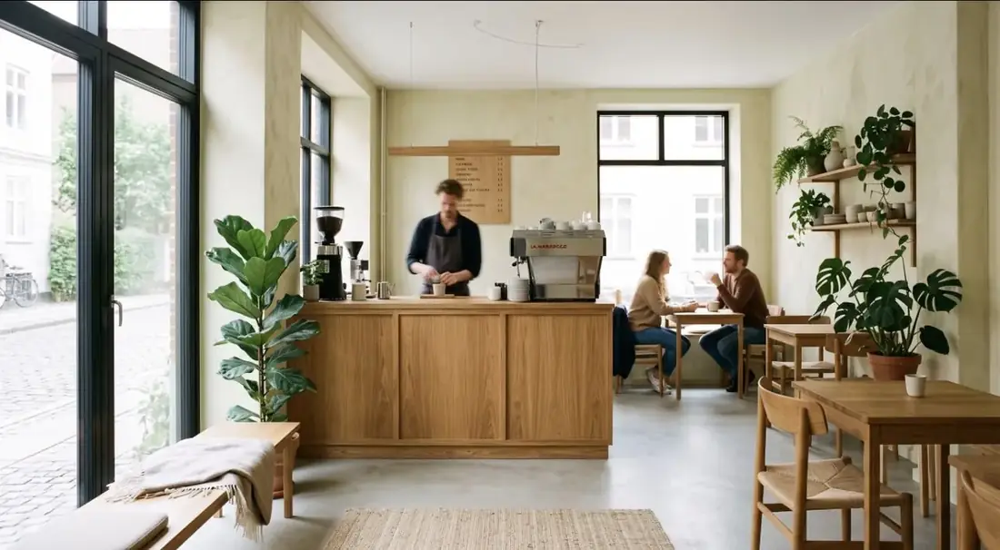
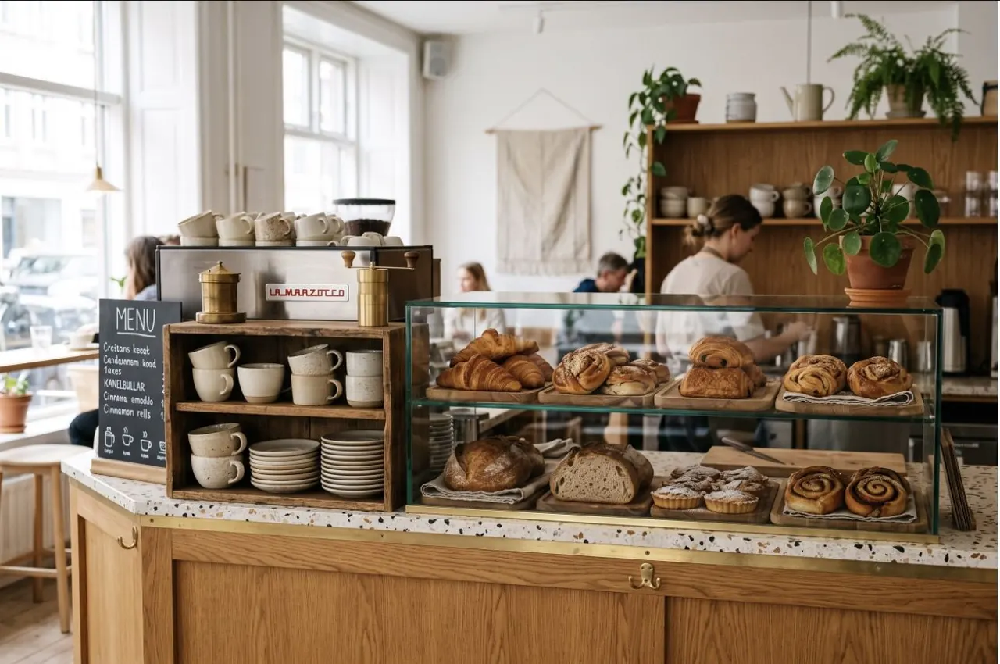

Spezialitätenkaffee · Landsberg am Lech
Kaffee in kleinen Chargen und Frühstück den ganzen Tag, in einem Raum für lange Morgen.
Beliebt

MØRK
Wir rösten in kleinen Chargen, mahlen frisch pro Tasse und nehmen uns Zeit — für den Kaffee und für dich.
Die Küche kocht den ganzen Tag Frühstück: einfach, saisonal, gut. Mehr über uns →
Öffnungszeiten
Wo
Kirchstraße 786899 Landsberg am Lech
An der Ecke beim Altstadtplatz. Hunde willkommen, Laptops bis mittags.